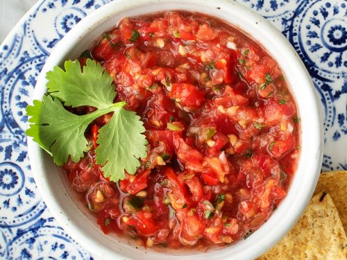

Salsa de cilantro

Ingredientes:
- 1/2 atado de cilantro fresco
- 5 tomates medianos pelados
- 2 chiles picantes rojos
- 1 cda. de sal marina
- 4 cdas. de azúcar mascabado
- 1 vaso de aceite de oliva
Preparación
- Llevar todo a la licuadora
- Batir todo por 3 minutos
- Verificar el sabor
- Llevar en una salsera a la mesa para acompañar ensaladas y arroces